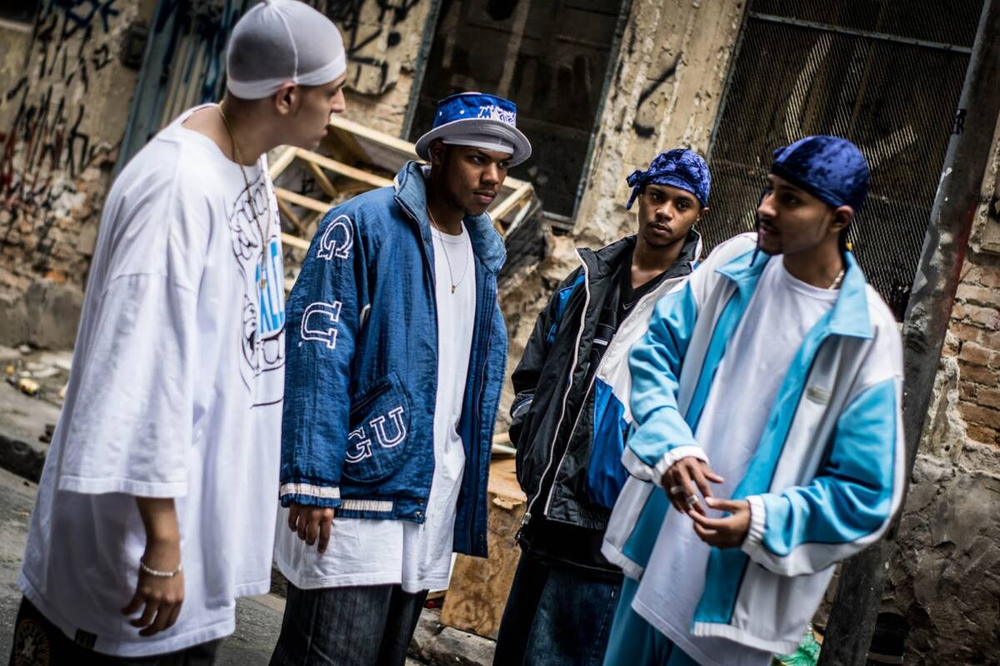

A Ascensão do Trap no Brasil na Década de 2020: Cultura Urbana, Geração Digital e Estética da Violência
O trap, subgênero do hip hop originado no sul dos Estados Unidos no início dos anos 2000, consolidou-se como uma das principais expressões musicais da juventude global nas duas últimas décadas. Caracterizado por batidas graves de 808, hi-hats acelerados, atmosferas densas e o uso intensivo de autotune, o trap nasceu como uma expressão das realidades urbanas periféricas americanas, frequentemente associadas ao tráfico de drogas, à violência e à marginalização social.
No Brasil, o gênero começou a ganhar força no final da década de 2010, mas foi na década de 2020 que o trap realmente se consolidou como um dos estilos mais populares entre os jovens. Artistas como Matuê, Teto, WIU, Borges, Sidoka, Filipe Ret, entre outros, passaram a dominar plataformas digitais, acumulando milhões de ouvintes e visualizações, muitas vezes sem o respaldo de grandes gravadoras ou da mídia tradicional. Esse crescimento rápido revela não apenas uma mudança nos meios de consumo musical, mas também uma profunda conexão entre o trap e as vivências das juventudes urbanas brasileiras.
O trap brasileiro passou por um processo de adaptação cultural, misturando influências do funk, da MPB, do samba e do pagode com a estética sonora e visual importada dos Estados Unidos. O resultado é um gênero híbrido, onde convivem tanto a linguagem globalizada quanto elementos da identidade nacional. As letras abordam temas como superação, ostentação, vivência periférica, relações afetivas, espiritualidade e, de forma recorrente, a violência.
É justamente nesse ponto que se torna possível ampliar a análise para além da música: o trap, como qualquer manifestação artística de grande alcance, também revela padrões geracionais. Assim como o rock dos anos 1980 refletia uma juventude contestadora, e o pop dos anos 2000 expressava um ideal de consumo e globalização, o trap dá voz a uma geração que cresceu em meio a desigualdades acentuadas, hiperconectividade, crise institucional e ausência de perspectivas claras de mobilidade social. Essa geração vê no trap não só um estilo musical, mas um código cultural — uma forma de afirmação, protesto e sobrevivência simbólica.
No entanto, a ascensão de um gênero que, por vezes, glamouriza a violência, o crime e o uso de drogas também exige reflexão. Embora seja legítimo que a arte represente a realidade — e o trap de fato expõe vivências muitas vezes ignoradas pelo discurso dominante —, há o risco de que a repetição contínua de mensagens violentas contribua para a normalização de certos comportamentos e valores. Quando o sucesso, a masculinidade ou o respeito passam a ser associados exclusivamente ao poder armado ou ao consumo extremo, abre-se espaço para distorções perigosas na construção identitária dos jovens.
Isso não significa, de forma alguma, que o trap deva ser censurado. Pelo contrário: ele é uma forma legítima de expressão que denuncia desigualdades e revela o poder criativo das periferias brasileiras. No entanto, a ascensão do gênero também evidencia a urgência de ampliar o debate sobre representatividade, diversidade de narrativas e responsabilidade cultural.
Em síntese, o trap no Brasil é um fenômeno complexo e multifacetado. Ele surge da importação de um modelo norte-americano, mas é ressignificado pelas vivências brasileiras; ele representa uma geração marcada por cicatrizes sociais profundas. Compreender o trap é, portanto, compreender a juventude brasileira atual.